Code
library(tidyverse)
library(magrittr)
library(reactable)
library(ggthemes)
library(DescTools)
library(tidymodels)
library(vip)library(tidyverse)
library(magrittr)
library(reactable)
library(ggthemes)
library(DescTools)
library(tidymodels)
library(vip)# Load datasets
survival_tbl <- read_csv('Q4_dataset.csv')# structure and data types of the fields
glimpse(survival_tbl)Rows: 120
Columns: 4
$ Age <dbl> 45, 74, 58, 66, 57, 42, 70, 62, 43, 46, 41, 67, 56, 63,…
$ Operation_year <dbl> 68, 65, 59, 58, 64, 63, 58, 66, 64, 65, 59, 66, 67, 66,…
$ nr_of_nodes <dbl> 0, 3, 0, 1, 1, 1, 4, 0, 0, 20, 0, 0, 0, 0, 11, 0, 8, 8,…
$ survival <dbl> 1, 2, 1, 1, 2, 1, 2, 1, 2, 2, 1, 1, 1, 1, 1, 1, 1, 1, 2…Convert the dependent variable survival to factor.
# Convert the dependent variable `survival` to factor
survival_tbl %<>%
mutate(survival = if_else(survival == 1, "The patient survived 5 years or longer", "The patient died within 5 years"),
survival = as.factor(survival))reactable(survival_tbl, searchable = TRUE, filterable = TRUE, sortable = TRUE, pagination = TRUE)# brief data summary
summary(survival_tbl) Age Operation_year nr_of_nodes
Min. :30.00 Min. :58.0 Min. : 0.000
1st Qu.:43.75 1st Qu.:60.0 1st Qu.: 0.000
Median :53.50 Median :63.0 Median : 0.500
Mean :53.02 Mean :63.1 Mean : 3.567
3rd Qu.:62.00 3rd Qu.:66.0 3rd Qu.: 3.000
Max. :78.00 Max. :69.0 Max. :46.000
survival
The patient died within 5 years :29
The patient survived 5 years or longer:91
# detailed summary
Desc(survival_tbl)------------------------------------------------------------------------------
Describe survival_tbl (tbl_df, tbl, data.frame):
data frame: 120 obs. of 4 variables
120 complete cases (100.0%)
Nr ColName Class NAs Levels
1 Age numeric .
2 Operation_year numeric .
3 nr_of_nodes numeric .
4 survival factor . (2): 1-The patient died within 5 years,
2-The patient survived 5 years or longer
------------------------------------------------------------------------------
1 - Age (numeric)
length n NAs unique 0s mean meanCI'
120 120 0 44 0 53.02 50.95
100.0% 0.0% 0.0% 55.10
.05 .10 .25 median .75 .90 .95
36.90 38.00 43.75 53.50 62.00 69.10 71.05
range sd vcoef mad IQR skew kurt
48.00 11.50 0.22 13.34 18.25 0.05 -0.90
lowest : 30.0 (2), 31.0, 33.0, 34.0, 35.0
highest: 72.0, 73.0, 74.0 (2), 76.0, 78.0
' 95%-CI (classic)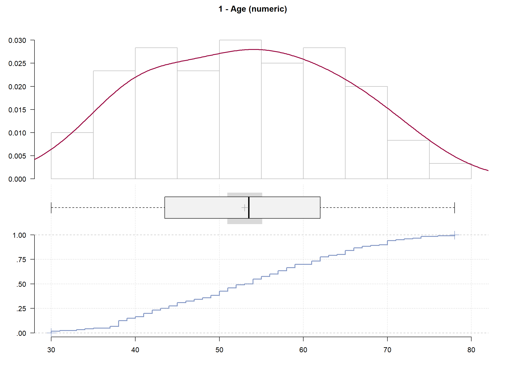
------------------------------------------------------------------------------
2 - Operation_year (numeric)
length n NAs unique 0s mean meanCI'
120 120 0 12 0 63.10 62.48
100.0% 0.0% 0.0% 63.72
.05 .10 .25 median .75 .90 .95
58.00 58.00 60.00 63.00 66.00 67.00 68.05
range sd vcoef mad IQR skew kurt
11.00 3.41 0.05 4.45 6.00 -0.01 -1.26
value freq perc cumfreq cumperc
1 58 14 11.7% 14 11.7%
2 59 13 10.8% 27 22.5%
3 60 7 5.8% 34 28.3%
4 61 9 7.5% 43 35.8%
5 62 10 8.3% 53 44.2%
6 63 8 6.7% 61 50.8%
7 64 14 11.7% 75 62.5%
8 65 8 6.7% 83 69.2%
9 66 12 10.0% 95 79.2%
10 67 14 11.7% 109 90.8%
11 68 5 4.2% 114 95.0%
12 69 6 5.0% 120 100.0%
' 95%-CI (classic)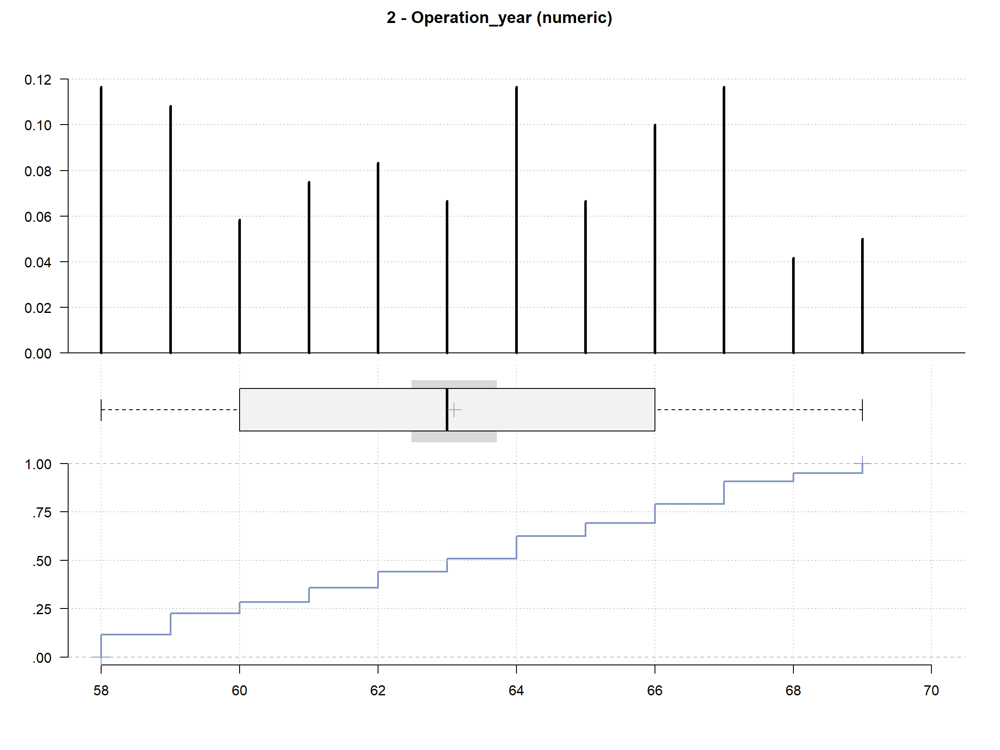
------------------------------------------------------------------------------
3 - nr_of_nodes (numeric)
length n NAs unique 0s mean meanCI'
120 120 0 20 60 3.57 2.31
100.0% 0.0% 50.0% 4.82
.05 .10 .25 median .75 .90 .95
0.00 0.00 0.00 0.50 3.00 13.00 15.20
range sd vcoef mad IQR skew kurt
46.00 6.96 1.95 0.74 3.00 3.26 13.42
lowest : 0.0 (60), 1.0 (14), 2.0 (8), 3.0 (9), 4.0 (3)
highest: 19.0 (2), 20.0, 22.0, 35.0, 46.0
heap(?): remarkable frequency (50.0%) for the mode(s) (= 0)
' 95%-CI (classic)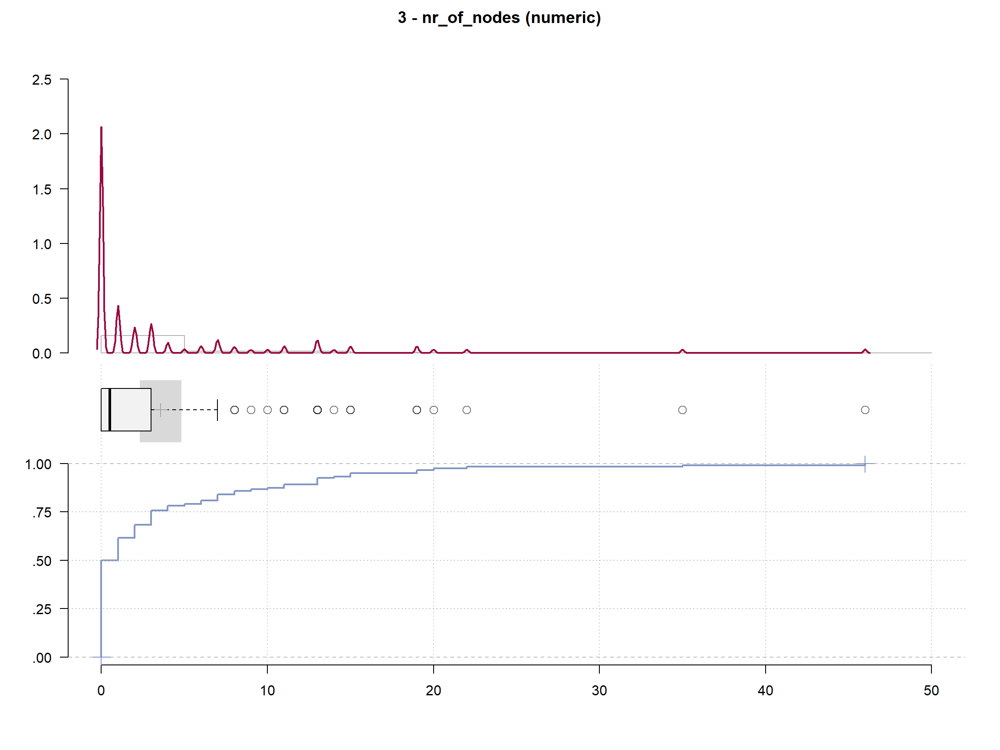
------------------------------------------------------------------------------
4 - survival (factor - dichotomous)
length n NAs unique
120 120 0 2
100.0% 0.0%
freq perc lci.95 uci.95'
The patient died within 5 years 29 24.2% 17.4% 32.6%
The patient survived 5 years or longer 91 75.8% 67.4% 82.6%
' 95%-CI (Wilson)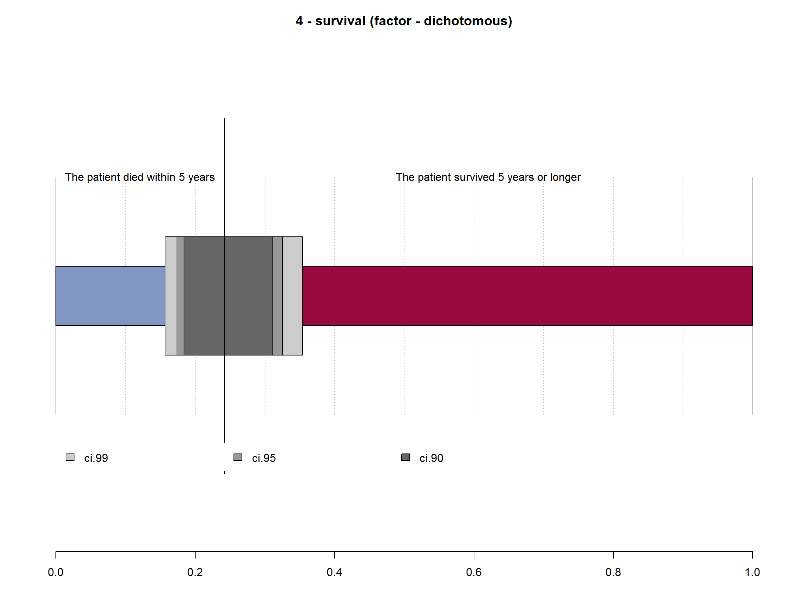
# Survival Distribution
survival_tbl %>%
group_by(survival) %>%
summarise(Freq = n()) %>%
mutate(prop = Freq/sum(Freq)) %>%
filter(Freq != 0) %>%
ggplot(mapping = aes(x = 2, y = prop, fill = survival))+
geom_bar(width = 1, color = "white", stat = "identity") +
xlim(0.5, 2.5) +
coord_polar(theta = "y", start = 0) +
theme_void() +
scale_y_continuous(labels = scales::percent) +
geom_text(aes(label = paste0(round(prop*100, 1), "%")), size = 4, position = position_stack(vjust = 0.5)) +
scale_fill_manual(values = c("#fc0394","#03adfc")) +
#theme(axis.text.x = element_text(angle = 90), legend.position = "top")+
labs(title = "Patient survival distribution",
x = "",
y = "",
fill = "") +
theme(legend.position = "top") +
theme(title = element_text(family = "Sans", face = "bold", size = 16))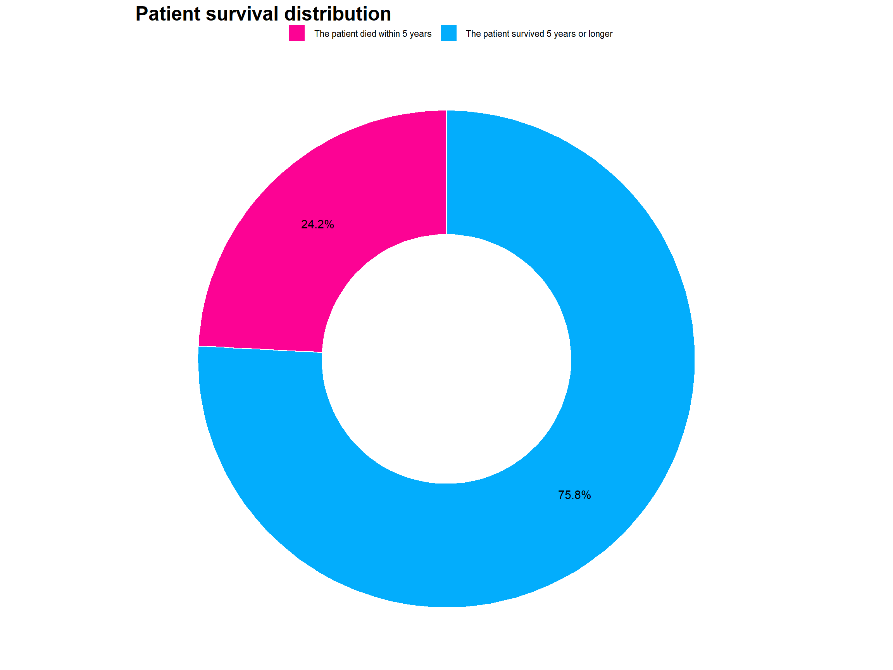
# Age Distribution
ggplot(survival_tbl, aes(Age)) +
geom_histogram(fill = "steelblue", color = "white") +
labs(title = 'Patient age distribution',
x = "Age",
y = "Frequency",
fill = "") +
theme(title = element_text(family = "Sans", face = "bold", size = 16)) +
theme_clean()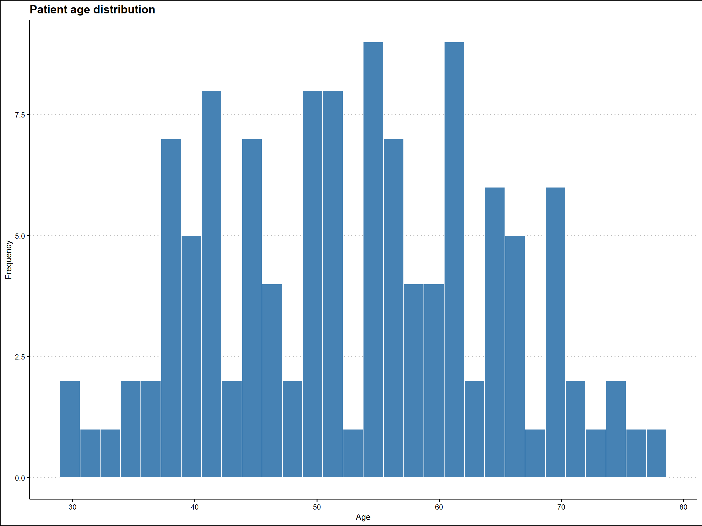
# Distribution of positive auxiliary nodes detected
ggplot(survival_tbl, aes(nr_of_nodes)) +
geom_histogram(fill = "steelblue", color = "white") +
labs(title = 'Distribution of positive auxiliary nodes',
x = "# of Auxiliary Nodes",
y = "Frequency",
fill = "") +
theme(title = element_text(family = "Sans", face = "bold", size = 16)) +
theme_clean()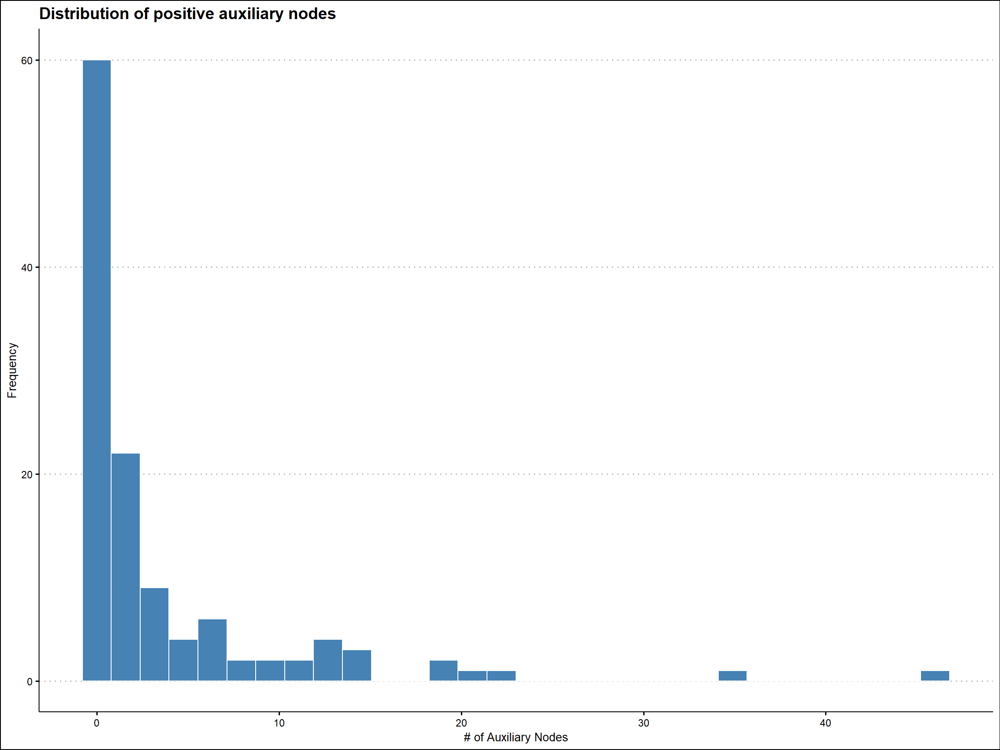
# Counts of surgery performed yearly
survival_tbl %>%
mutate(Operation_year = paste0("19", Operation_year)) %>%
group_by(Operation_year) %>%
summarise(Count = n()) %>%
ggplot(aes(x = Operation_year, y = Count)) +
geom_bar(stat = "identity", width = 0.5, fill = "steelblue", color = "white") +
labs(title = 'Count of surgery performed yearly',
x = "Year of operation") +
theme(title = element_text(family = "Sans", face = "bold", size = 16),
axis.title = element_text(family = "sans", size = 10, face = "plain")) +
theme_clean() +
scale_y_continuous(labels = scales::comma) +
geom_text(aes(label = Count), size = 4)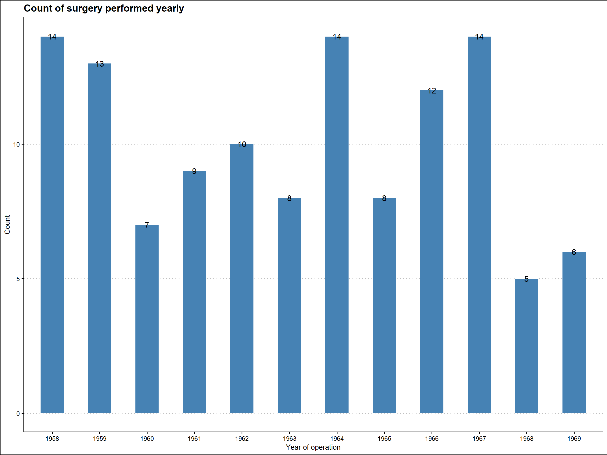
Check dataframe for NAs
any(is.na(survival_tbl))[1] FALSENA is found. The dataset is complete without any missing values.# split data to train and test set
set.seed(1234)
split <- survival_tbl %>%
initial_split(prop = 0.75, strata = survival) # 75% training set | 25% testing set
df_train <- split %>%
training()
df_test <- split %>%
testing()rec <- recipe(survival ~ ., data = df_train)
# add preprocessing
prepro <- rec %>%
step_normalize(all_numeric_predictors()) %>%
prep()
preproRecipe
Inputs:
role #variables
outcome 1
predictor 3
Training data contained 89 data points and no missing data.
Operations:
Centering and scaling for Age, Operation_year, nr_of_nodes [trained]## Logistic Regression
lr <- logistic_reg(
mode = "classification"
) %>%
set_engine("glm")## Logistic Regression
lr_wf <- workflow() %>%
add_recipe(prepro) %>%
add_model(lr)set.seed(1234)
## Logistic Regression
lr_wf %>%
fit(df_train) %>%
tidy()# A tibble: 4 × 5
term estimate std.error statistic p.value
<chr> <dbl> <dbl> <dbl> <dbl>
1 (Intercept) 1.29 0.283 4.57 0.00000483
2 Age -0.147 0.286 -0.515 0.606
3 Operation_year -0.0605 0.278 -0.218 0.828
4 nr_of_nodes -1.09 0.324 -3.37 0.000745 set.seed(1234)
## Logistic Regression
lr_pred <- lr_wf %>%
fit(df_train) %>%
predict(df_test) %>%
bind_cols(df_test)kap: Kappasens: Sensitivityspec: Specificityf_meas: F1mcc: Matthews correlation coefficientlr_pred %>%
conf_mat(truth = survival, estimate = .pred_class) %>%
autoplot(type = "heatmap")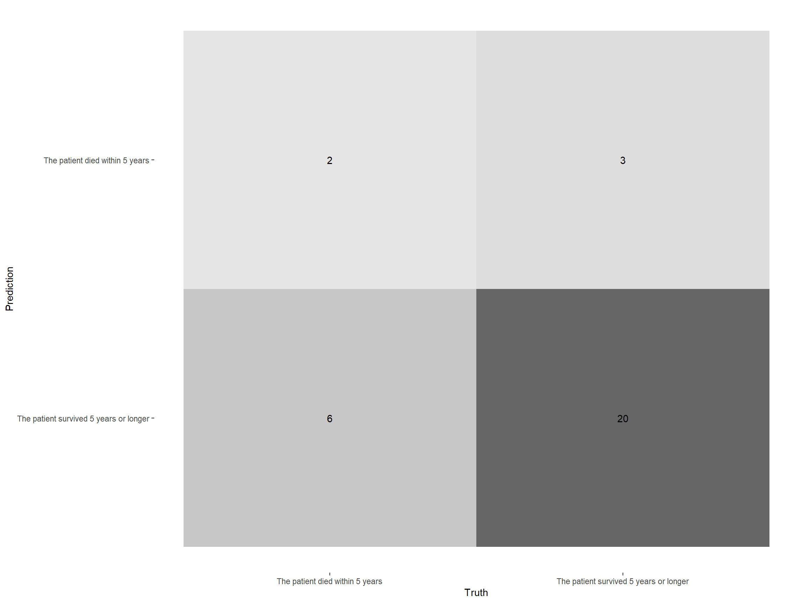
lr_pred %>%
conf_mat(truth = survival, estimate = .pred_class) %>%
summary()# A tibble: 13 × 3
.metric .estimator .estimate
<chr> <chr> <dbl>
1 accuracy binary 0.710
2 kap binary 0.136
3 sens binary 0.25
4 spec binary 0.870
5 ppv binary 0.4
6 npv binary 0.769
7 mcc binary 0.142
8 j_index binary 0.120
9 bal_accuracy binary 0.560
10 detection_prevalence binary 0.161
11 precision binary 0.4
12 recall binary 0.25
13 f_meas binary 0.308prob_preds <- lr_wf %>%
fit(df_train) %>%
predict(df_test, type = "prob") %>%
bind_cols(df_test)
threshold_df <- prob_preds %>%
roc_curve(truth = survival, estimate = `.pred_The patient survived 5 years or longer`)
threshold_df %>%
autoplot()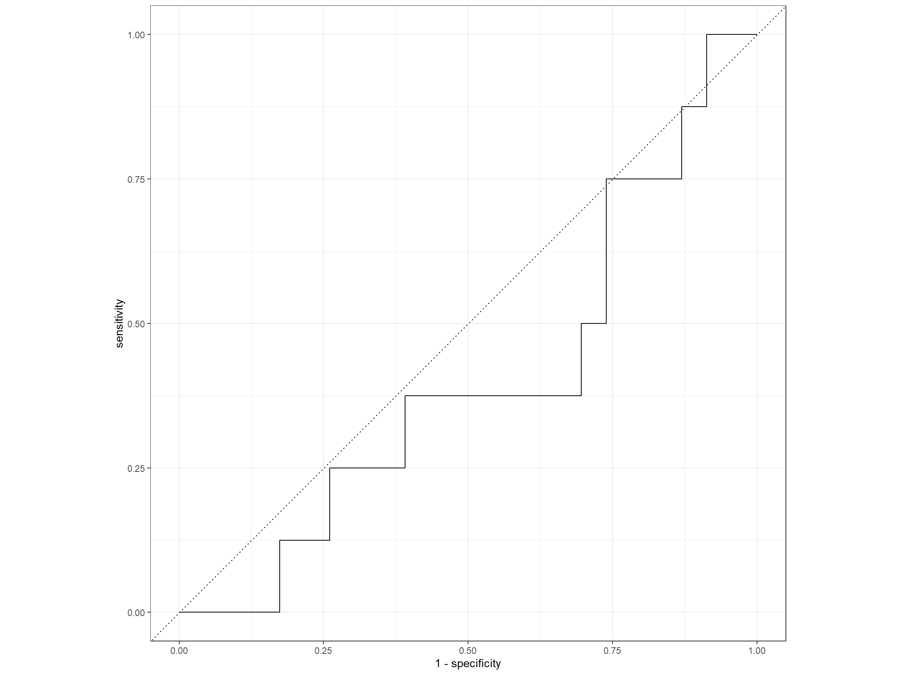
roc_auc(prob_preds, truth = survival, estimate = `.pred_The patient survived 5 years or longer`)# A tibble: 1 × 3
.metric .estimator .estimate
<chr> <chr> <dbl>
1 roc_auc binary 0.402Relative variable importance plot
final_lr_model <-
lr_wf %>%
fit(data = df_train)
final_lr_model══ Workflow [trained] ══════════════════════════════════════════════════════════
Preprocessor: Recipe
Model: logistic_reg()
── Preprocessor ────────────────────────────────────────────────────────────────
1 Recipe Step
• step_normalize()
── Model ───────────────────────────────────────────────────────────────────────
Call: stats::glm(formula = ..y ~ ., family = stats::binomial, data = data)
Coefficients:
(Intercept) Age Operation_year nr_of_nodes
1.29290 -0.14725 -0.06054 -1.09101
Degrees of Freedom: 88 Total (i.e. Null); 85 Residual
Null Deviance: 97.25
Residual Deviance: 81.15 AIC: 89.15final_lr_model %>%
extract_fit_parsnip()parsnip model object
Call: stats::glm(formula = ..y ~ ., family = stats::binomial, data = data)
Coefficients:
(Intercept) Age Operation_year nr_of_nodes
1.29290 -0.14725 -0.06054 -1.09101
Degrees of Freedom: 88 Total (i.e. Null); 85 Residual
Null Deviance: 97.25
Residual Deviance: 81.15 AIC: 89.15## variable importance plot
final_lr_model %>%
extract_fit_parsnip() %>%
vip() +
labs(title = 'Variables relative importance',
x = "") +
theme(title = element_text(family = "Sans", face = "bold", size = 16),
axis.title = element_text(family = "sans", size = 10, face = "plain")) +
theme_clean() +
scale_y_continuous(labels = scales::comma)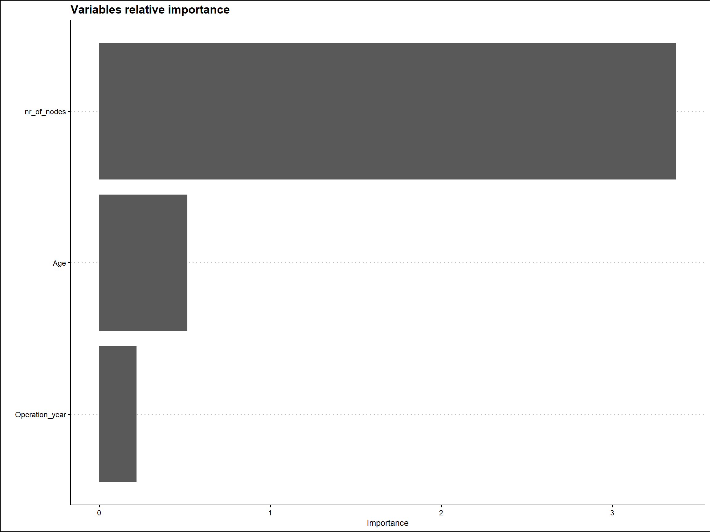